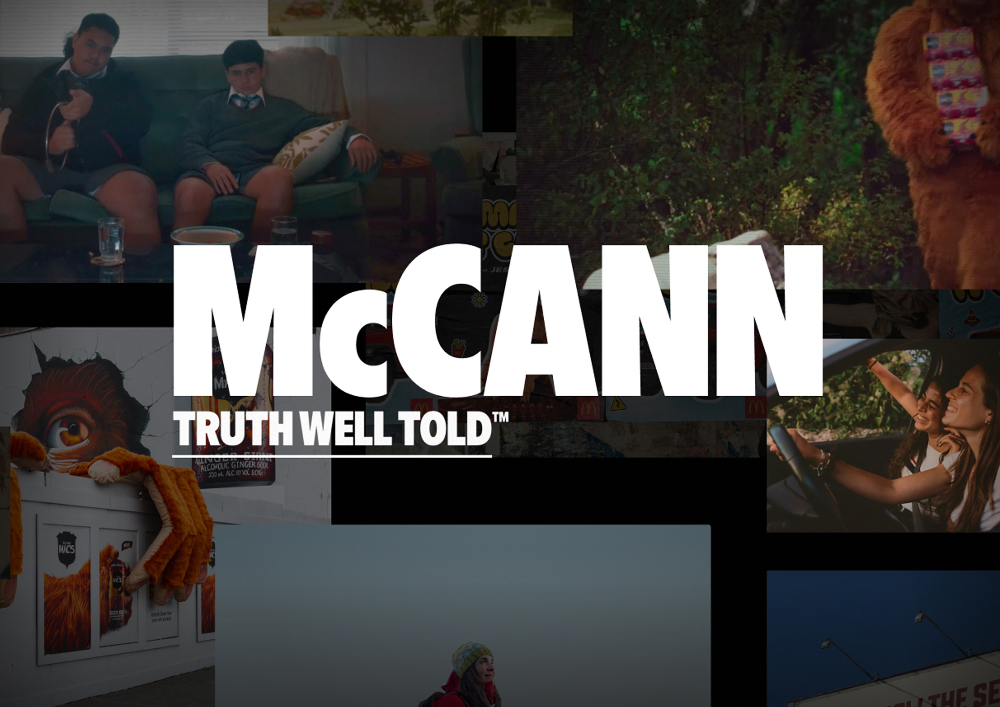
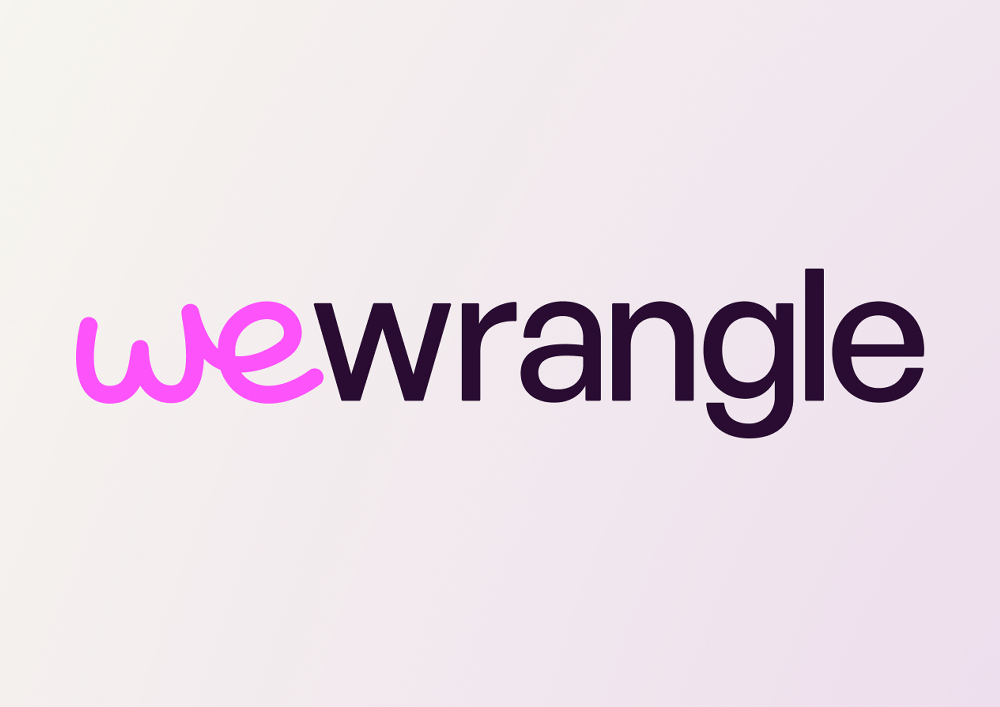

McCann Aotearoa
A McCann Aotearoa site overhaul and redesign. Following the DDB merger, this project involved redesigning the former DDB website to better align with McCann’s branding and to reimagine the site’s aesthetics and core user flows, in order to best showcase its projects and capabilities.
McCann NZ, User Experience Design, Existing Brand/Product

WeWrangle
A UX-focused task to rethink and improve the user flows of an AI focused product. This involved working with an existing product and redesigning how users interact with each screen to create the best possible experiences for each user.
McCann NZ, User Experience Design, Existing Brand/Product